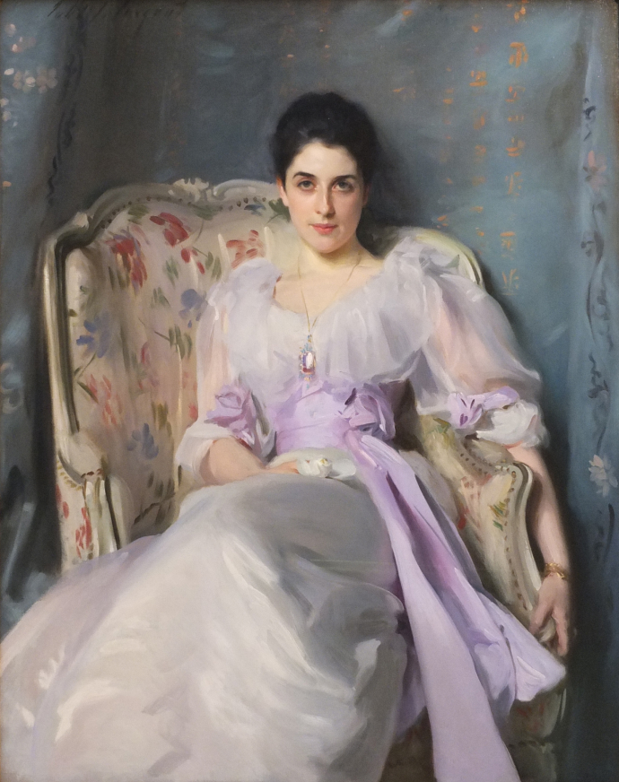

Lady Agnew of Lochnaw

About
Lady Agnew of Lochnaw is an oil on canvas portrait painting of Gertrude Agnew, the wife of Sir Andrew Agnew, 9th Baronet. The painting was commissioned in 1892 and completed the same year by the American portrait artist John Singer Sargent.